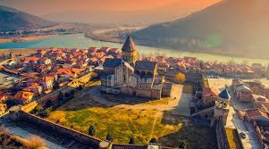
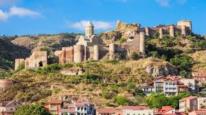

ვარძია

კლდეში ნაკვეთი სამონასტრო ანსამბლი, XII-XIII საუკუნეების ქართული მხატვრული კულტურის ძეგლი. მდებარეობს ისტორიულ ჯავახეთში, ასპინძის მუნიციპალიტეტში. მდინარე მტკვრის მარცხენა ნაპირზე. ზღვის დონიდან 1300 მეტრზე. ოროგრაფიული სქემის მიხედვით ვარძია მდებარეობს ერუშეთის ქედის აღმოსავლეთის განტოტების ბოლოს. ვარძიის უკიდურესი ზედა გამოქვაბული ზღვის დონიდან 1462 მ-ზე ძევს.
სვეტიცხოველი
საქართველოს მართლმადიდებელი ეკლესიის მთავარი საპატრიარქო საკათედრო ტაძარი, საქართველოს დედა-ტაძარი, საქართველოს კათოლიკოს-პატრიარქთა ინთრონიზაციის (აღსაყდრების) ადგილი, შუა საუკუნეების საქართველოს მრავალი მეფის, მათი ოჯახის წევრების და პატრიარქთა საკრძალავი, XI საუკუნის ქართული ხუროთმოძღვრების ძეგლი, ერთ-ერთი ოთხ დიდ კათედრალთაგან (ოშკი, ბაგრატის ტაძარი, ალავერდი). მდებარეობს თბილისიდან 20 კმ დაშორებით, ქალაქ მცხეთაში. სვეტიცხოველში დაკრძალულია უფლის კვართი და წმ. ელია წინასწარმეტყველის მოსასხამი. იუნესკოს მსოფლიო კულტურული მემკვიდრეობის ძეგლი.
ნარიყალა
უძველესი დროის ციხესიმაგრე, რომელიც თბილისსა და მდინარე მტკვარს გადაჰყურებს. ნარიყალა (სპარს. ნარინყალა — ციტადელი, შიდაციხე), თბილისის ციხის — კალას გვიანდელი სახელწოდებაა. წყაროებში პირველად მოხსენიებულია 1772 წელს გერმანელი მოგზაურ იოჰან გიულდენშტედტთან. ციხესიმაგრე გალავნის ორი სექციისგან შედგება, რომელიც ციცაბო ამაღლებაზე მდებარეობს გოგირდის აბანოებსა და ბოტანიკურ ბაღს შორის. ნარიყალას ქვემო ეზოში ახლად აღდგენილი წმ. ნიკოლოზის სახელობის ეკლესია და მცირე კაფე მდებარეობს